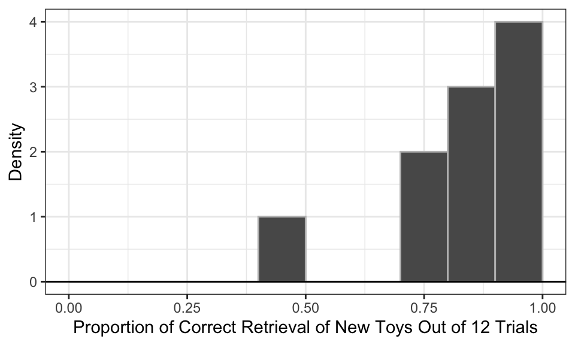
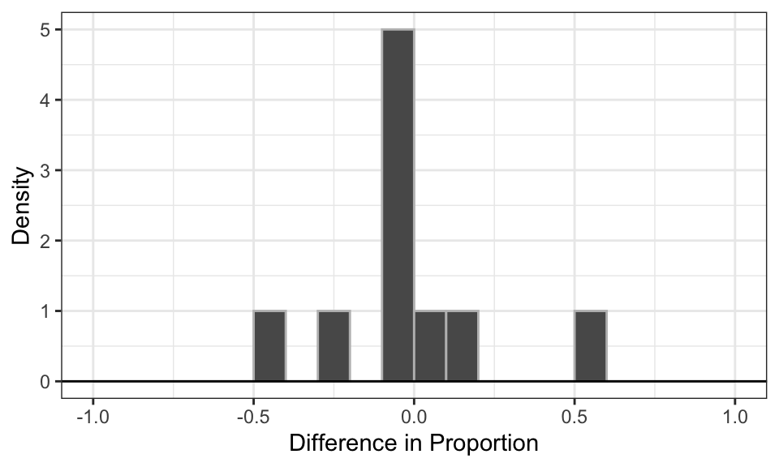

Human toddlers, starting at around 18 months old, can learn novel object labels passively by overhearing third-party interactions without being directly addressed. For example, if one adult says “hand me an apple” and another does so, the child might learn to identify an apple and associate it with the word “apple”.
This process is driven by developing sociocognitive capacities such as gaze following, conversation monitoring, intention understanding, and perspective-taking. Of course, this process is more efficient when adults use simplified sentences, emphasis, enthusiasm, and other non-verbal emphasis.
Dogs share some human-like social and cognitive abilities they learn being immersed in our households. For example, many family dogs learn actions like “sit.” Dror et al. (2026) explored whether dogs could be capable of passive label learning, similar to toddlers. Specifically, they were interested in Gifted Word Learner (GWL) dogs that can learn the names of hundreds of objects and perform at a word-learning level comparable to 18 months olds.
To learn whether GWL dogs learn object labels by passively overhearing interactions between humans the researchers performed an experiment where 𝑛 = 10 dogs were exposed to a condition where two family members sitting across from each other passing the toy back and forth. The caretaker addressed the second person using simple sentence frames and non-verbal cues, neither directly to the dog.
This exposure occurred daily for eleven days with two new toys.
Toy A: Days 1-3; 9
Toy B: Days 5-7; 10
Rest: Day 4, 8, 11
On the twelfth day, out of the caretaker’s sight, the two new toys were placed alongside nine familiar toys. The caretaker requested the toys verbally twenty-four times – twelve times for the two new toys, and twelve times for the nine familiar toys.
1 Question 1
1.1 Part a
The researchers were trying to infer from their data whether (1) the performance in the overhearing condition is above chance (50%), and (2) the difference between two conditions is different from 0.
In order to know what statistical test is the most appropriate for our data, we need to first summarize our data.
Table 1: Descriptive Statistics for Overhearing Condition
Statistics
Value
Mean
0.84
SD
0.18
Median
0.83
IQR
0.23
Skewness
-1.04
Excess_Kurtosis
0.22
Min
0.42
Max
1.00
Code
# In a histogram, the range of data is split into consecutive, equal-width intervals. These are called bindwidth. Then it places each observation into a bindwidth.ggplot(data.frame(overhear), aes(x = overhear)) +geom_histogram(aes(y =after_stat(density)), breaks =seq(0, 1, 0.1), color ="gray") +geom_hline(yintercept =0) +theme_bw() +labs(x ="Proportion of Correct Retrieval of New Toys Out of 12 Trials", y ="Density")
Figure 1: Results for Overhearing Condition

Code
summary_pdiff |> knitr::kable(digits =2)
Table 2: Descriptive Statistics for Paired Differences between the Overhearing and Direct Address Condition
Statistics
Value
Mean
-0.01
SD
0.26
Median
-0.04
IQR
0.15
Skewness
0.70
Excess_Kurtosis
0.15
Min
-0.42
Max
0.58
Code
ggplot(data.frame(pdiff), aes(x = pdiff)) +geom_histogram(aes(y =after_stat(density)), breaks =seq(-1, 1, 0.1), color ="gray") +geom_hline(yintercept =0) +theme_bw() +labs(x ="Difference in Proportion", y ="Density")
Figure 2: Difference in the Proportion of Correct Retrieval of New Toys between Direct Address and Overhearing Condition

In the first data set, there are ties and the underlying distribution is heavily skewed. Therefore, either the exact or approximate Wilcoxon test is appropriate.
Because the sample size too small to invoke Central Limit Theorem and the underlying distribution of data does not seem Gaussian, we cannot use the \(t\)-test or the \(z\)-test.
I would use the exact Binomial Test to answer the first question, which involves transforming the data into Bernoulli data (i.e., whether the dog retrieved the correct new toys in more than half of the 12 trials or not).
The second data set seems to have an underlying Gaussian distribution that is leptokurtic. However, it doesn’t meet the sample size requirements of the \(t\)-test, \(z\)-test or the approximate Wilcoxon test.
The exact Wilcoxon test cannot be used here because there are ties within the data. We can argue for the use of the \(t\)-test even when the sample size is small if we know that the underlying population distribution is Gaussian. However, given the small sample size, I wouldn’t trust that our data gives us a good guess about the underlying population distribution.
I also wouldn’t use the Exact Binomial Test because the question we’re trying to is better addressed with continuous data—since we’re more interested in the magnitude of the difference from 0 than merely whether it is different from 0 at all (e.g., in Bernoulli data, a difference of 0.0833 and 0.5833 are both encoded as 1). We will use a use randomization test to make statistical inferences from this data set.
1.2 Part b
1.2.1 Research Question 1
We want to see if the dogs could correctly retrieve the new toys above chance level when they only overheard their owners label these toys while talking to someone else. To do this, we treat each dog as a Bernoulli trial: if its proportion of correct retrieval across 12 trials is higher than 0.5, then it’s a “success”. In our sample of 10 dogs, we observed 9 successes.
Using the one-sample exact binomial test, we can decide if this observed count of success, which follows a Binomial Distribution, is unusual in a world where the dogs are equally likely to succeed or fail, i.e., perform at chance level.
\(H_0\): \(p = 0.5\)
\(H_a\): \(p \neq 0.5\)
Of the 10 dogs tested, 9 (90%) performed above chance across 12 trials. This proportion was statistically discernible from the chance level of .50, \(p = .021, 95% CI [.555, .997]\). The effect size was large, Cohen’s \(h=0.927\). There is statistically discernible support for the alternative hypothesis, that is, the dogs performed significantly above chance with the new toys in the Overhearing Condition. This indicates that the dogs are able to map the labels onto the objects just by overhearing their caregivers referring to the new toys.
Code
overhear_b =c(1, 1, 1, 1, 0, 1, 1, 1, 1, 1)summary_overhear_b =data.frame(n =length(overhear_b),x =sum(overhear_b),Proportion =mean(overhear_b)# In Bernoulli data, the proportion is the mean.)
Code
summary_overhear_b |> knitr::kable(digits =2)
Table 3: Number of Dogs that Retrieved the Correct New Toys Above Chance Level
n
x
Proportion
10
9
0.9
Code
# The count of observations where the dogs performed above chance follows a Binomial Distribution.test.result =binom.test(x =9, # number of successes n =10, # number of trialsp =0.5, # probability of success in each trialalternative ="two.sided",conf.level =0.95)
We want to know if there is a difference in performance of the dogs between two conditions: the Direct Address and the Overhearing condition. We calculate the mean of the difference scores and conduct statistical inferences to see if this mean is significantly different from 0.
\(H_0\): \(\mu_X = 0\)
\(H_a\): \(\mu_X \neq 0\)
Under the null hypothesis, that is the hypothesis of no difference, group assignments do not matter. In a randomization test, we combine the data and randomly reassign group labels to them for many times to create a null distribution, then calculate the probability of observing what we observed or something that provides more support for the alternative hypothesis under the assumption that the null is true.
In this case, for each dog, we can swap the proportion of correct retrieval in the Direct Address condition with that in the Overhearing condition, or keep each of the two observations in their original condition. This swap is decided randomly for each of the 10 dogs. The difference between the two conditions are calcuated for each dog. We then calculate the mean of the difference scores of all 10 dogs. We repeat this process many times and build a distribution under \(H_0\).
I performed the randomization for 10,000 times, and used bootstrapping to find the confidence interval. The mean of the paired difference observed in our sample was not significantly different from 0 (\(M=-0.008, SD = 0.265, p=0.984, 95% CI[-0.150, 0.158]\)). We do not have statisically discernible support for the alternative hypothesis, suggesting that there is not a significant difference in performance of the dogs between the Overhearing and the Direct Address condition.
Code
set.seed(7272)null =rep(NA, 10000)# for each randomization: randomly relabel each dog's difference score (i.e., flipping its sign)for (i in1:10000){ signs =sample(c(-1, 1), size =length(pdiff), replace =TRUE) null[i] =mean(signs * pdiff)}# two-sided p-value# We take absolute values because we're looking at values that are equal to or larger than our observed mean in both directions. # Proportion = Mean(logical vector) because T is treated as 1 and F as 0.p_value =mean(abs(null) >=abs(mean(pdiff)))print(p_value)
One condition of the use of Binomial Distribution is that the observations in our sample are independent. If researchers pool two observations from each dog (which are dependent on each other), across 10 dogs, together, then the observations are not independent.
In addition, since the dogs went through repeated trials, the probability of success may be impacted by fatigue or learning effects, thus differing from 0.5.
2.2 Part b
This probability is incredibly small.
Code
(dbinom(x =10, size =10, p =0.5^2))
[1] 9.536743e-07
Code
# probability of selecting the correct new toy out of 2 new toys in 1 trial is 0.5, so will be 0.25 across 2 trials
2.3 Part c
The approximation for the probability computed in Part B is not close. The sample size is not large enough for us to invoke Central Limit Theorem to fit a \(z\)-distribution over the Binomial Distribution.
n =10p =0.25mu = n * psigma =sqrt(n * p * (1- p))((pnorm(10.5, mean = mu, sd = sigma) -pnorm(9.5, mean = mu, sd = sigma)))
[1] 1.567447e-07
Code
# this is density, not probability (area under the curve) (dnorm(10, mean = 10 * 0.25, sd=sqrt(10 * 0.25 * (1 - 0.25))))
2.4 Part d
When all trials are successes, it does not make sense to make inference because there is no variablity to take into consideration. Their may be variablity in the population that our sample doesn’t reflect, but we don’t have any information provided by our data to give us a clue as to that.
References
Dror, Shany, Ádám Miklósi, Boglárka Morvai, Andreea-Silvia Năstase, and Claudia Fugazza. 2026. “Dogs with a Large Vocabulary of Object Labels Learn New Labels by Overhearing Like 1.5-Year-Old Infants.”Science 391 (6781): 160–63. https://doi.org/10.1126/science.adq5474.